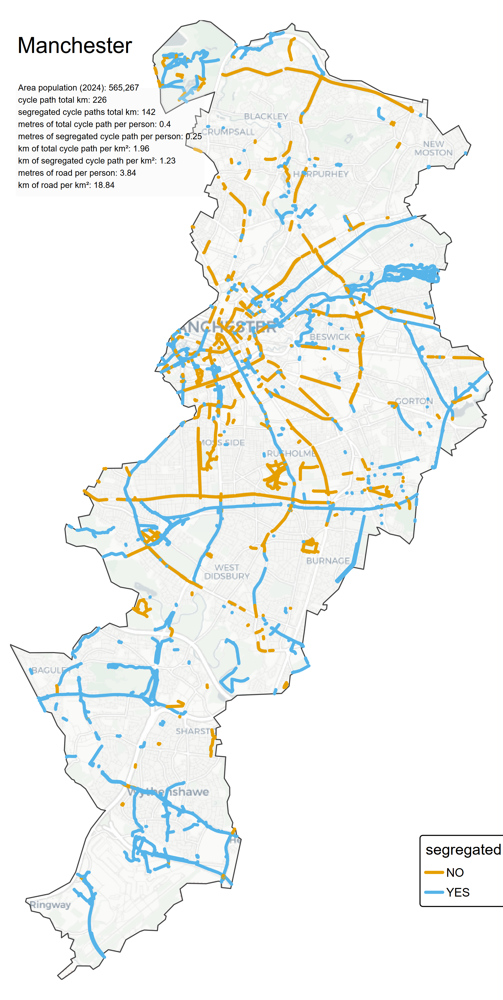
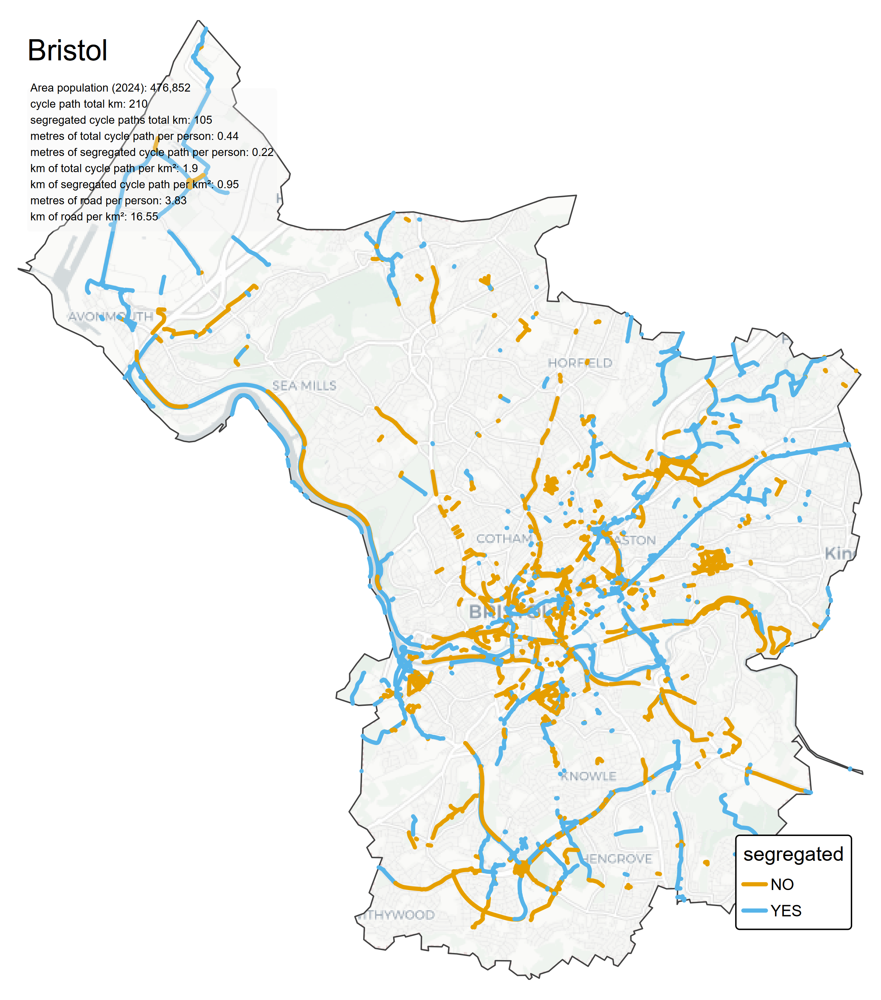
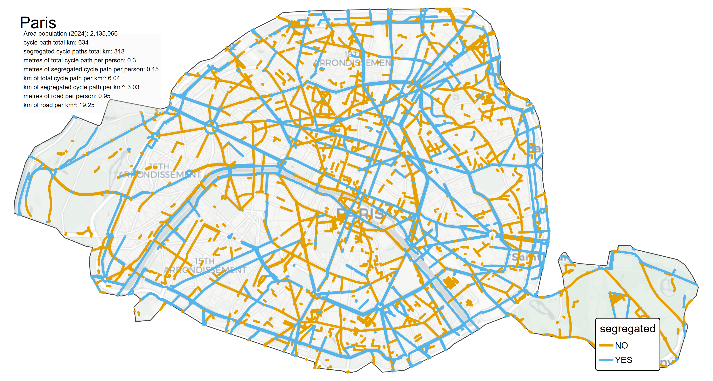
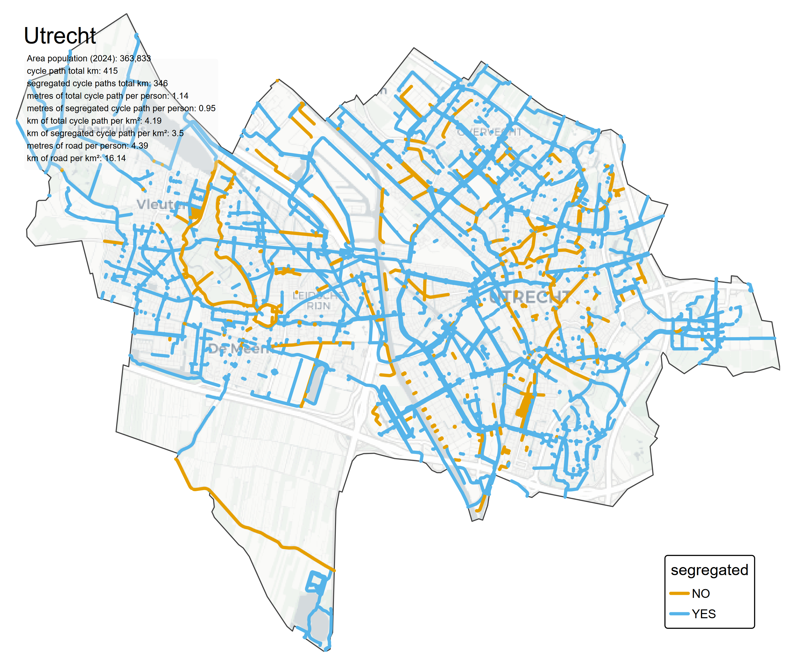
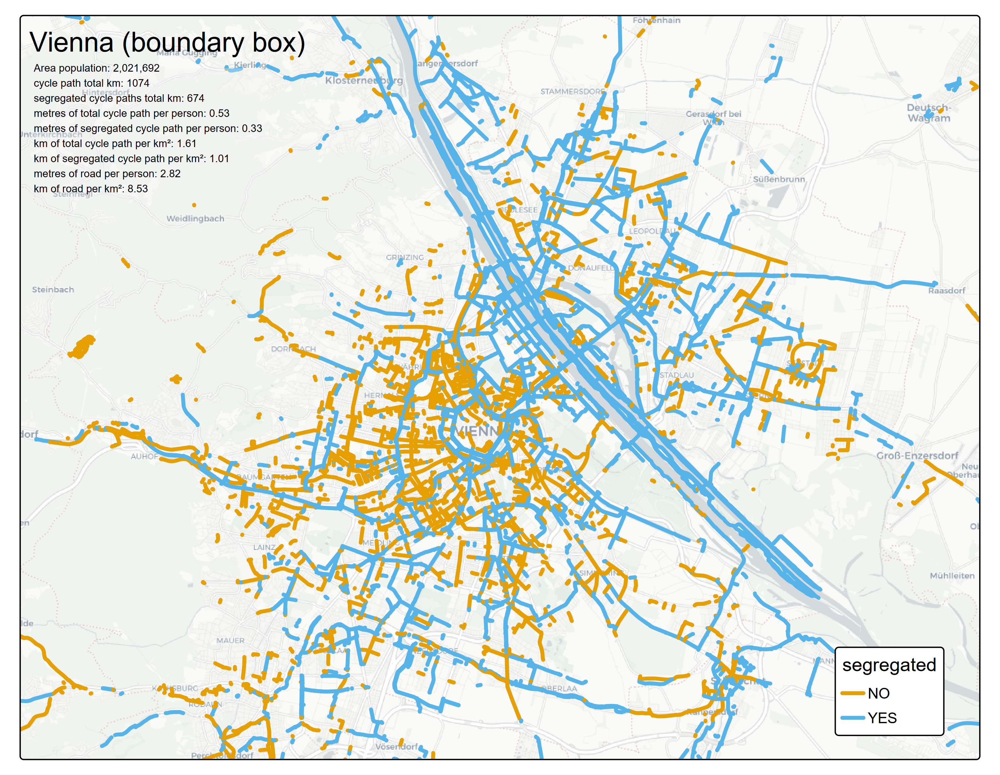
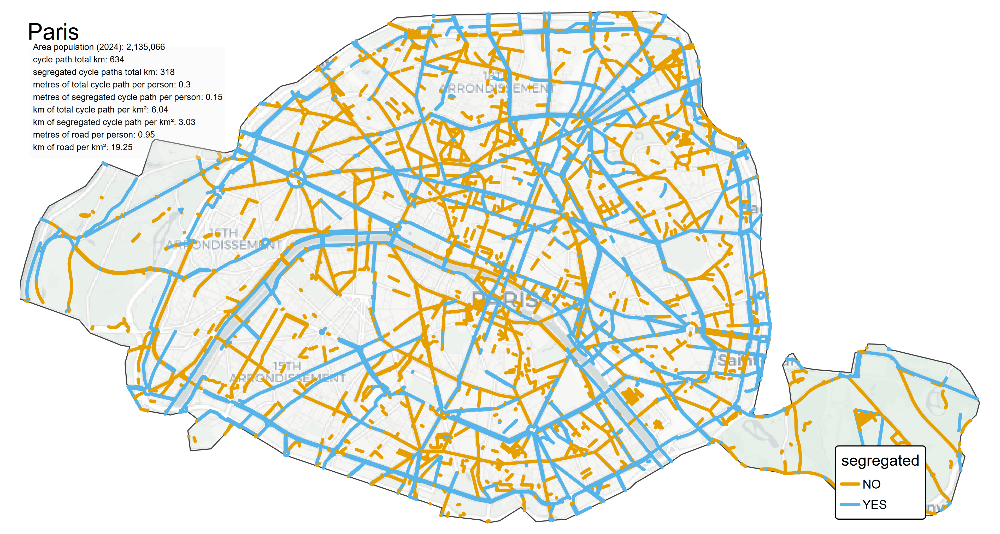
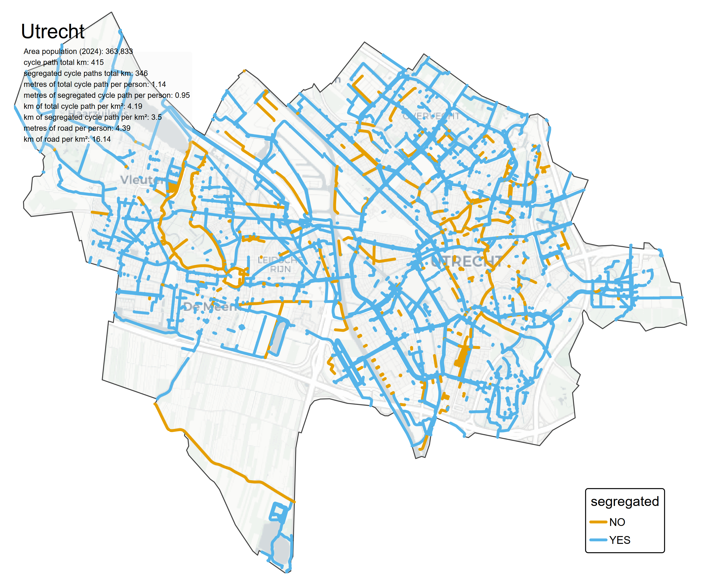
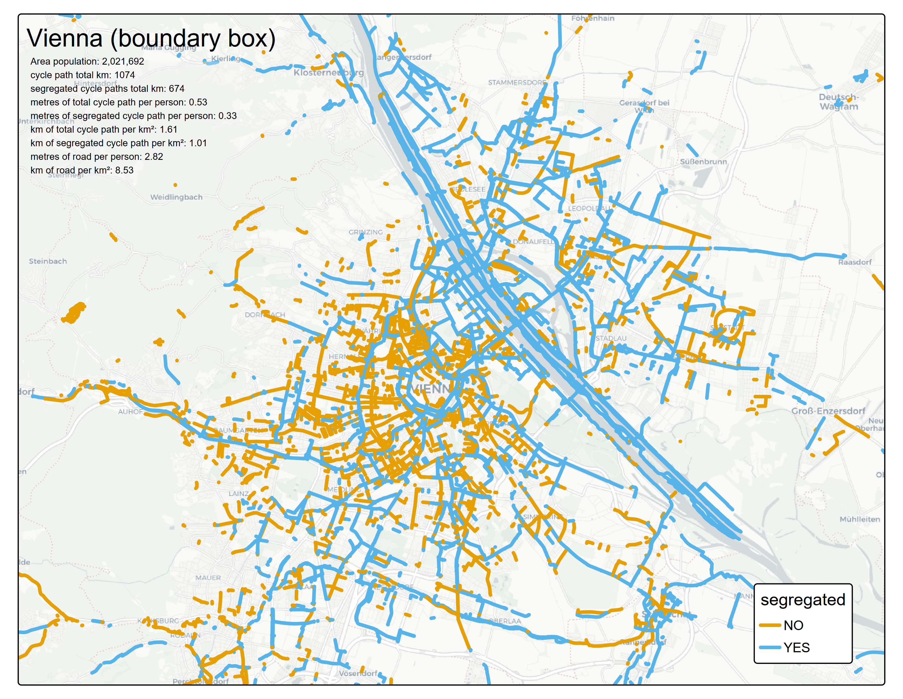

cycle_cities
Using the osmactive package, the cycle routes for a number of cities, picked for personal interest and knowledge of which ones might have good infrastructure, were imported, plotted and some stats calculated (table below).
On average the Dutch cities have over 1metre of segregated cycle infrastructure per person in each city. In the UK it is around half of this.
A plot of some of the cities is shown below. An interactive plot is shown in the tab City Cycle Paths
     
  